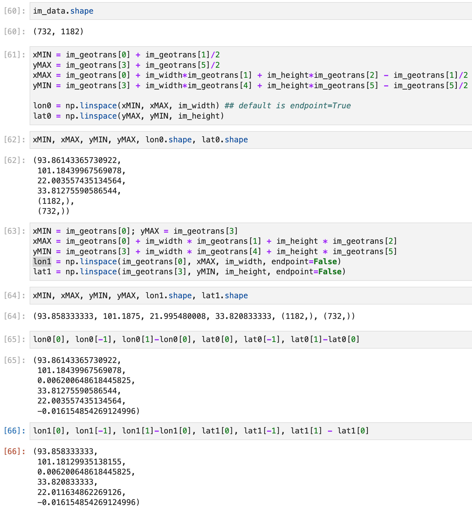

This means we use the center of a pixel or the corner of a pixel, which is explained clearly in https://github.com/opengeospatial/ogcapi-coverages/issues/92
For me, I use gdal a lot. If using gdal’s GeoTransform to read a tif, be careful that
the pixel/line coordinates are from (0.0,0.0) at the top left corner of the top left pixel to (width_in_pixels,height_in_pixels) at the bottom right corner of the bottom right pixel
See the official document: https://gdal.org/user/raster_data_model.html
So, it would be wrong to use the following code to transform tif to nc:
1 2 3 4 5 6 7 8 9 10 11 12 13 14 15 def read_tiff (path ): dataset = gdal.Open(path) im_width = dataset.RasterXSize im_height = dataset.RasterYSize im_bands = dataset.RasterCount im_proj = dataset.GetProjection() im_geotrans = dataset.GetGeoTransform() im_data = dataset.ReadAsArray(0 , 0 , im_width, im_height) return im_data, im_width, im_height, im_bands, im_proj, im_geotrans im_data, im_width, im_height, im_bands, im_proj, im_geotrans = read_tiff(file) xMAX = im_geotrans[0 ] + im_width * im_geotrans[1 ] + im_height * im_geotrans[2 ] yMIN = im_geotrans[3 ] + im_width * im_geotrans[4 ] + im_height * im_geotrans[5 ] lon = np.linspace(im_geotrans[0 ], xMAX, im_width, endpoint=False ) lat = np.linspace(im_geotrans[3 ], yMIN, im_height, endpoint=False )
It should be:
1 2 3 4 5 6 7 8 9 10 11 12 13 14 15 16 17 18 def read_tiff (path ): dataset = gdal.Open(path) im_width = dataset.RasterXSize im_height = dataset.RasterYSize im_bands = dataset.RasterCount im_proj = dataset.GetProjection() im_geotrans = dataset.GetGeoTransform() im_data = dataset.ReadAsArray(0 , 0 , im_width, im_height) return im_data, im_width, im_height, im_bands, im_proj, im_geotrans im_data, im_width, im_height, im_bands, im_proj, im_geotrans = read_tiff(file) xMIN = im_geotrans[0 ] + im_geotrans[1 ]/2 yMAX = im_geotrans[3 ] - im_geotrans[5 ]/2 xMAX = im_geotrans[0 ] + im_width*im_geotrans[1 ] + im_height*im_geotrans[2 ] - im_geotrans[1 ]/2 yMIN = im_geotrans[3 ] + im_width*im_geotrans[4 ] + im_height*im_geotrans[5 ] - im_geotrans[5 ]/2 lon = np.linspace(xMIN, xMAX, im_width-1 ) lat = np.linspace(yMAX, yMIN, im_height-1 )
These two methods will create different results:
